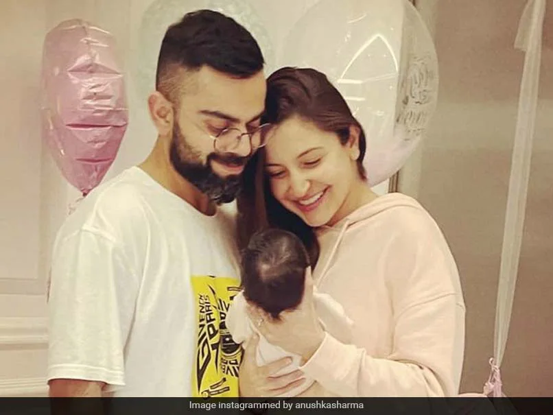

virat kohli
anushka sharma
virushika
virat kohli

Virat Kohli (Hindi pronunciation: [ʋɪˈɾɑːʈ ˈkoːɦli] ⓘ; born 5 November 1988) is an Indian international cricketer and the former captain of the Indian national cricket team. He is a right-handed batsman and an occasional medium-fast bowler. He currently represents Royal Challengers Bengaluru in the IPL and Delhi in domestic cricket. Kohli is widely regarded as one of the greatest batsmen of all time.[4] He holds the record as the highest run-scorer in IPL, ranks second in T20I, third in ODI, and stands as the fourth-highest in international cricket.[5] He also holds the record for scoring the most centuries in ODI cricket and stands second in the list of most international centuries scored. Kohli was a key member of the Indian team that won the 2011 Cricket World Cup, 2013 ICC Champions Trophy, and captained India to win the ICC Test mace three consecutive times in 2017, 2018, and 2019.
back to top
anushka sharma
Anushka Sharma (pronounced [əˈnʊʃka ˈʃərma]; born 1 May 1988) is an Indian actress who works in Hindi films. She has received several awards, including a Filmfare Award. One of the highest-paid actresses in India as of 2018,[1] she has appeared in Forbes India's Celebrity 100 since 2012 and was featured by Forbes Asia in their 30 Under 30 list of 2018.[2]
Born in Ayodhya and raised in Bangalore, Sharma had her first modelling assignment for the fashion designer Wendell Rodricks in 2007 and later moved to Mumbai to pursue a full-time career as a model. She made her acting debut opposite Shah Rukh Khan in the top-grossing romantic film Rab Ne Bana Di Jodi (2008) and rose to prominence with starring roles in Yash Raj Films' romances Band Baaja Baaraat (2010) and Jab Tak Hai Jaan (2012); winning the Filmfare Award for Best Supporting Actress for the latter. Sharma went on to earn praise for playing strong-willed women in the crime thriller NH10 (2015), and the dramas Dil Dhadakne Do (2015), Ae Dil Hai Mushkil (2016), and Sui Dhaaga (2018). Her highest-grossing releases came with the sports drama Sultan (2016), and Rajkumar Hirani's films PK (2014) and Sanju (2018). The poorly received Zero (2018) was followed by a hiatus from acting.
back to top
virushka

Indian cricketer Virat Kohli and wife and actress Anushka Sharma announced the arrival of their second child, a baby boy. According to the joint statement put up by the couple on social media platform Instagram, the baby boy was born on February 15, 2024. Anushka Sharma and Virat Kohli informed that they had named their child Akaay.
"With abundant happiness and our hearts full of love, we are pleased to inform everyone that on 15th February, we welcomed our baby boy Akaay & Vamika's little brother into this world! We seek your blessings and good wishes in this beautiful time in our lives. We request you to kindly respect our privacy at this time.
back to top